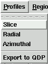
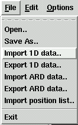
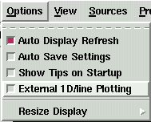

|  Several 1D products can be created from the currently loaded image. These are essentially various profiles of sections of the image invoked from the main menu. |
 Data can also be saved and loaded via the File menu |
 Users have the option of doing all plotting in the main window, or of creating an external window for 1D plots, thereby allowing both to be displayed simultaneously. When a single window is used the Image and 1D-Plot buttons toggle the display. |